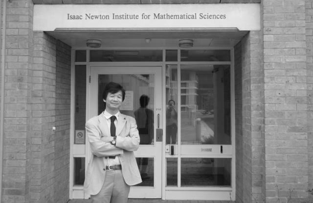
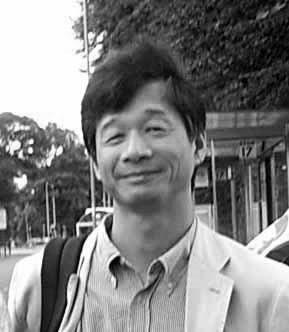

Who is he?
Makoto Yoneya received his Dr.Eng. degrees in Organic and Polymeric Material Engineering from the Tokyo Institute of Technology in 1996.
He is now working for Electronics and photonics research institute of National Institute of Advanced Industrial Science and Technology (AIST).
He joined Hitachi Ltd. in 1986, and had been a Research Engineer of Hitachi Research Laboratory. He had been worked on device simulation of liquid crystal displays and molecular simulation of liquid crystal molecules on surfaces.
He also had been a group leader of Japan Science and Technology Agency (JST), ERATO (Exploratory Research for Advanced Technology) "Yokoyama Nano-structured Liquid Crystal Project" from 1999 to 2004 and a group leader of JST/SORST "Liquid Crystal Nano-System" Project from 2004 to 2009.
Biography
- Born, Iwamizawa city, Hokkaido, Japan, 1960
- B.Eng., Hokkaido University, 1983
- M.Eng., Applied Physics, Hokkaido University, 1985
- Research engineer, Hitachi Research Laboratory, Hitachi, Ltd., 1986-1990
- Visiting researcher, Univ. of Groningen, supervisor Prof. Dr. H.J.C. Berendsen , May. 1990 - May. 1991
- Research engineer, Hitachi Res. Lab., Hitachi, Ltd., 1991-1997
- D.Eng., Tokyo Institute of Technology, supervisor Prof. H. Takezoe, 1996
- Senior research engineer, Hitachi Res. Lab., Hitachi, Ltd., 1997-1999
- Group leader of JST/ERATO "Yokoyama Nano-structured Liquid Crystal Project", directed by Prof. H. Yokoyama, Oct. 1999 - Sep. 2004
- Part-time lecturer, Tokyo Institute of Technology, Jan., 2001
- Part-time lecturer, Ochanomizu Univ., May, 2004
- Group leader of JST/SORST "Liquid Crysta Nano-System Project, Oct. 2004- Mar. 2009
- Group leader, Nano-simulation group, Nanotechnology research institute, AIST, Apr. 2006- Mar. 2010
- Part-time lecturer, Yamagata Univ., Dec., 2006
- Group leader, Nano-simulation group, Nanosystem research institute, AIST, Apr. 2010- Sep. 2010
- Group leader, Softmatter modeling group, Nanosystem research institute, AIST, Oct. 2010 - Mar. 2015
- Part-time lecturer, Tsukuba Univ., Dec., 2011
- Chief senior researcher, Chemical materials simulation group, Research institute for sustainable chemistry, AIST, Apr. 2015 - Sep. 2015
- Chief senior researcher, Flexible materials base team, Flexible electronics research center, AIST, Oct. 2015 - May. 2016
- Team leader, Flexible materials base team, Flexible electronics research center, AIST, June 2016 - Mar. 2019
- Chief senior researcher, Molecular assembly group, Electronics and photonics research institute, AIST, Apr. 2019 -
Memberships
- Japan Society of Applied Physics
Interests
- softmaterial science
- molecular simulation
Recent works
- Molecular Dynamics Simulation Study of the Plastic/Ferroelectric Crystal Quinuclidinium Perrhenate
J. Phys. Chem. C, 124(3), 2171-2177 (2020)- Simulation of Colloidal Silver Nanoparticle Formation from a Precursor Complex
J. Phys. Chem. C, 123(17), 11257-11263 (2019)- On the Monolayer Crystal Structure of the Organic Semiconductor 7-Decyl-2-Phenyl[1]benzothieno[3,2-b][1]benzothiophene
J. Phys. Chem. C, 122(39), 22225-22231 (2018)- Self-Assembly of Donor-Acceptor Semiconducting Polymers in Solution Thin Films: Molecular Dynamics Simulation Study
J. Mater. Chem. C, 5(37), 9602-9610 (2017)- Characterization of Crystal Polymorphs of the Organic Semiconductor Non-Peripheral Octa-Hexyl Phthalocyanine
Jap. J. Appl. Phys., 56(8), 081601 (2017)- Interface-Mediated Self-Assembly in Inkjet Printing of Single-Crystal Organic Semiconductor Films
J. Phys. Chem. C, 121(16), 8796-8803 (2017)- Origin of the High Carrier Mobilities of Non-peripheral Octa-hexyl Substituted Phthalocyanine
J. Phys. Chem. C, 119(42), 23852-23858 (2015)- Simulation of Metal-Organic Framework Self-Assembly
Phys. Chem. Chem. Phys., 17(14), 8649-8652 (2015)- Tilt Orientationally Disordered Hexagonal Columnar Phase of Phthalocyanine Discotic Liquid Crystals
Phys. Rev. E, 89(6), 062505 (2014)
- Coordination-Directed Self-Assembly of M12L24 Nanocage: Effects of Kinetic Trapping on the Assembly Process
ACS Nano, 8(2), 1290-1296 (2014)
Publication lists
- Journal Papers
- Articles (mostly in Japanese)
- Simulation and Theory of Liquid Crystals
Ekisho 21(3) (2017)- Books
- Self-Assembling Systems: Theory and Simulation, Ed. Li-Tang Yan, Wiley, (2016)
Chapter 7: Simulation Studies of Metal-Ligand Self-Assembly- The Liquid Crystal Display Story, Ed. Naoyuki Koide, Springer, (2014)
Chapter 10.1Lecture notes (in Japanese)
- GROMACS for primers on WindowsPC (for small molecular weight materials)
- GROMACS for primers on WindowsPC (for synthetic polymer materials)
- LAMMPS for primers on WindowsPC (for inorganic materials)
- LAMMPS for primers on WindowsPC (for organic materials)
Makoto Yoneya on ...
Contact info.
Makoto Yoneya
Chief senior researcherMolecular assembly group,
Electronics and photonics research institute,
National Institute of Advanced Industrial Science and Technology (AIST)
1-1-1 Higashi, Tsukuba, Ibaraki, 305-8565
JAPAN
E-mail: makoto-yoneya(at)aist.go.jp
last updated 14 May, 2020